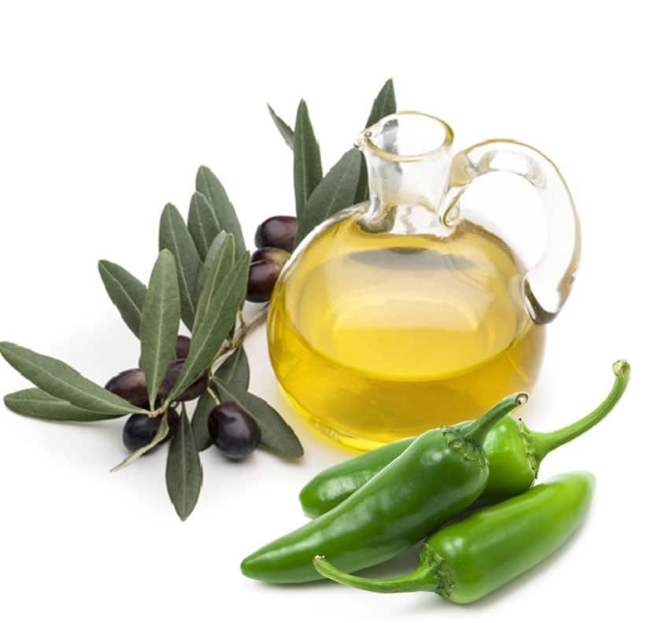

Jalepeno Oil

Description
Jalapeño infused olive oil is one of our favorite ways to use extra chilies at season’s end. You can then enjoy that chili pepper heat all winter long. It also makes a terrific homemade spicy food gift come the holiday season. Just package it up in a fancy bottle and voila!
This recipe specifically designed for our Relaxin' Jackson cocktail
Ingredients
- Jalapeno Peppers, 6 seeded and sliced in half
- Olive Oil, 2 Cups
Steps
- In a sauce pan, heat 1 cup of the olive oil over medium, then add in the jalapeño halves. Let them simmer in the oil over medium for 5 minutes, stirring frequently.
- Add the remaining oil and reduce the heat to low. Continue stirring for 5 minutes.
- Remove the saucepan from the heat, cover, and allow the oil to rest and cool for 1 hour.
- Strain the oil into a bottle or jar to remove the jalapeño pepper halves and seeds.